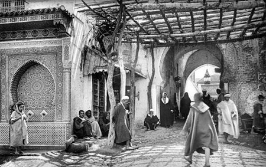

La historia de Marruecos, antes del Islam
Marruecos ocupa en la actualidad lo que se puede considerar el extremo occidental del Magreb. Y los primeros habitantes conocidos de este territorio fueron los bereberes, un término que a ellos mismos no les gusta emplear, pues probablemente deriva del apelativo ‘bárbaro’, impuesto por los romanos o por los árabes. En cambio, ellos se hacen llamar imazighen, que significa “hombres de la tierra” u “hombres libres”. Eran pastores nómadas venidos del sur, que acabaron asentándose de manera más o menos estable en el III milenio a.C.
Algo que siempre ha caracterizado a los bereberes o imazighen es su independencia y apego a sus propias tradiciones. Y eso ha provocado que su cultura y lengua haya pervivido hasta nuestros días, como aún puede apreciarse cuando se viaja por el país. Además, en algunos momentos de la Edad Antigua, llegaron a controlar buena parte del norte de África, desde la costa occidental hasta Egipto.
Relaciones con fenicios y cartagineses
Este orgullo y valentía no fue un impedimento para entablar relaciones con las diferentes civilizaciones con las que entraron en contacto. En particular, los fenicios, venidos del extremo oriental del Mediterráneo, y sus sucesores, los cartagineses. Estos pueblos tuvieron siempre una vocación más comercial que conquistadora y, gracias a los intercambios que establecieron con ellos, la población nómada precedente se fue volviendo progresivamente más sedentaria.
La colonia fenicia más importante de aquel momento, a partir del siglo VII a.C, fue Lixus, muy cerca de la actual Larache, en la costa atlántica. Los bereberes, asentados en los valles y en las montañas, entregaban pieles, ganado y productos lácteos, a cambio de manufacturas y semillas proporcionadas por los fenicios. Además, la población bereber aprendió técnicas metalúrgicas y agrícolas, así como la escritura púnica.
Desde el siglo IV a.C, los romanos se refirieron a este territorio y a sus gentes como el ‘país de los Mauri’ o Mauretania: era un reino indígena que estaba en la órbita de los cartagineses y vinculado con el reino de Numidia (norte de las actuales Argelia y Libia), llegando a establecer relaciones comerciales con comunidades judías. Pero la caída de Cartago (146 a.C) cambió la situación, quedando a expensas de los romanos, la nueva potencia hegemónica en el norte de África.
Bereberes ante el auge y caída del Imperio Romano
El Imperio Romano, desde mediados del siglo I d.C, estableció aquí la provincia Mauritania Tingitana, con un alto grado de romanización, que abarcaba el actual Marruecos septentrional, de tierras cultivables, al norte del Atlas. Las principales ciudades fueron Tingis (Tánger), Lixus, Salé (junto a la actual Rabat) y Volubilis (junto a la actual Meknes), donde el cristianismo (en forma de sectas y variantes cismáticas) tuvo una cierta acogida desde el siglo III. Al sur del Atlas, en cambio, quedaban las tribus bereberes.
Tras la caída del Imperio Romano (siglos V y VI), este territorio fue ocupado temporalmente por vándalos y, después, ansiado por el Imperio Bizantino, aunque realmente solo ejerció un control efectivo sobre Tánger y Ceuta. En cambio, quienes sí lograron un control más o menos efectivo del territorio fueron las tribus nómadas bereberes, que conformaron una especie de agrupación política conocida a menudo como Zenata.


La historia de Marruecos, desde la instauración del Islam
A finales del siglo VI y principios del siglo VII, la historia de Marruecos da un vuelco: en el año 682, el general árabe Uqba bin Nafi y sus tropas invaden estas tierras y, tras una defensa capitaneada por la reina guerrera Kahina, consolidan la conquista en el 708 hasta los márgenes del desierto del Sahara. Los bereberes marroquíes se convierten masivamente al Islam y, de hecho, son fundamentales para la conquista de la Península Ibérica: por ejemplo, el general Tarik, bereber y gobernador de Tánger, fue su gran artífice.
Eso no evitó que, en un primer momento, la situación fuera inestable e incluso anárquica. Grupos inspirados en el jariyismo impulsaron una suerte de sentimientos identitarios propios bajo el paraguas del Islam. Una situación que se mantuvo hasta la aclamada llegada del jeque Idris (Idris I), descendiente de Alí y yerno de Mahoma, que huía de Bagdad tras participar en un levantamiento contra el califa abasí.
Los idrisíes: 789-1055
Idris I fue acogido en un primer momento en Volubilis y, desde ahí, fundó la cercana Fez, que acabó siendo la capital de su reino, el reino de Fez de la dinastía idrisí. En poco tiempo, desde Idris II en adelante, la ciudad se convierte en un foco cultural y religioso, acogiendo a numerosos chiítas que huían del emirato independiente (y suní) de la Córdoba omeya, así como de la tunecina ciudad de Kairuán.
No obstante, el apogeo de la dinastía idrisí duró poco y, a partir mediados del siglo IX, acabó desgajándose en diferentes principados hasta mediados del siglo XI. Además, estos territorios se vieron salpicados por los conflictos entre los omeyas (suníes) del Califato de Córdoba y los fatimíes (chiíes) de Egipto, con acciones de hostigamiento de estos últimos a cargo de hilalianos (grupos tribales de beduinos).
Los almorávides: 1060-1144
Los almorávides fueron bereberes de tribus sanhaya (procedentes del suroeste del Sahara) que llevaron a cabo un primer intento unificador en la historia de Marruecos. Era una confederación de tribus de monjes-guerreros (su nombre deriva de los morabitos, especie de ermitaños-soldados), que construyeron numerosos conventos fortificados (ribat) y defendieron una visión muy ortodoxa del Islam. En 1070 fundaron Marrakech, convirtiéndola en la capital de un Imperio que se extendió hasta los confines con Ghana al sur y acudió al auxilio de los reinos taifas de la Península Ibérica, repeliendo el avance que hasta entonces había liderado el rey castellano Alfonso VI.
Entre sus grandes líderes estaban hombres como Abu Bakr Ibn Umar o Yusuf Ibn Tasfin, pero tras ellos, el poder y la influencia de los sucesores fue disminuyendo, acusados de abandonar el puritanismo de la ley coránica. A ello se unieron constantes intrigas por cuestiones sucesorias.
Los almohades: 1147-1269
En ese clima de descontento con los almorávides, surge una reacción aún más unitaria, rigorista y puritana del Islam, liderada por tribus bereberes masmudas, procedentes del Alto Atlas y rivales históricos de los sanhaya. Su fundador espiritual fue el teólogo Ibn Tumart, al que siguieron otros como Abd el-Mumen. La mezquita de Tinmel, una de las pocas visitables de Marruecos, es un buen ejemplo de ese periodo de incipiente poder almohade, clave en la historia de Marruecos.
En 1147 se conquistó Marrakech y el resto del territorio marroquí, y pocos años después ya dominaban un vasto territorio que incluía Al-Andalus, Argelia, Túnez y el norte de Libia. En las siguientes décadas supieron desarrollar una política centralizadora que bebía de la refinada cultura andalusí, pues muchos funcionarios procedían de aquellos territorios. Y no faltaron intercambios comerciales con importantes puertos europeos (Pisa, Marsella, Génova) demostrando su pujanza económica.
Pero es en el campo de la cultura en el que más destacaron los almohades, con importantes figuras como Averroes y monumentos de gran envergadura, como la mezquita de la Kutubia de Marrakech, la Torre Hasán de Rabat o la Giralda de Sevilla. Su principal lunar, en cambio, fue la gran rigidez exigida a cristianos y judíos, que vieron reducidos sus derechos y forzados al exilio en algunos casos.
La conjunción de causas internas (luchas tribales entre bereberes y árabes) y externas (derrotas en Al-Andalus, como la de las Navas de Tolosa en 1212) motivaron el declive del imperio almohade. En el Magreb, el imperio acabó dividiéndose en lo que, a grandes rasgos, terminaron siendo los países de Argelia, Túnez y Marruecos, dirigidos por dinastías locales. De esa manera comienza otro periodo de la historia de Marruecos, con la dinastía reinante de los benimerines, de origen bereber, con capital en Fez.
Los benimerines (o meriníes): 1269-1472
La dinastía de los benimerines prolongó su reinado durante dos siglos y tuvo como uno de sus grandes logros la consolidación de una tradición monárquica en el país, que controlaba la agricultura y el comercio, aunque con una relación no siempre fluida con los pastores nómadas.
Exteriormente, trató de restablecer territorios en Al-Andalus y en el norte de África, aunque sin éxito. Y de hecho tuvo que poner su empeño en la defensa de sus propios territorios, sobre todo ante el empuje portugués en el siglo XV (conquista de Ceuta en 1414). Eso, unido a nuevas divisiones internas entre clanes tribales bereberes y beduinos, acabó debilitando a los benimerines, dejando paso a los wattásidas.
Los wattásidas (1472-1554) y los saadíes (15545-1659)
En un contexto de expansión cristiana, con los portugueses amenazando y conquistando ciudades en la costa atlántica (Arcila, Larache, El Yadida, etc.) y los españoles en el litoral mediterráneo (Melilla), la dinastía wattásida supo aglutinar el fervor popular, principalmente a través de morabitos o jefes religiosos muy venerados.
Ese mismo fervor religioso aupó a la dinastía saadí, que surgió a comienzos del siglo XVI en el sur, a orillas del río Draa, y acabó imponiéndose como potencia hegemónica, con capital en Marrakech. Se puede considerar la primera dinastía no bereber (árabe) de la historia de Marruecos, y la fuente de legitimación de su sultán estaba en la descendencia directa de Mahoma, con el título de jerife. Además, fueron grandes impulsores de la industria local con monopolios reales.
A finales del siglo XVI, los saadíes alcanzaron un prestigio internacional notable, siendo su máximo exponente Ahmed Al-Mansur y su Palacio El-Badi de Marrakech, donde por cierto también están las tumbas de estos gobernantes. Batallaron con corsarios turcos que instigaban en las costas atlánticas, llegaron a ocupar efímeramente territorios al sur del Sahara, derrotaron a los portugueses y entablaron importantes relaciones diplomáticas con holandeses e ingleses, con los que compartían un enemigo común: la España de los Habsburgo, de donde llegaron numerosos moriscos expulsados o emigrados en esa centuria y en la siguiente. Pero su final no difiere mucho de otras dinastías: luchas intestinas que debilitan al monarca y su estructura, dando paso a otra dinastía de la historia de Marruecos, que acabó siendo hegemónica: los alauitas.
Los alauitas: desde 1659 hasta hoy
La llegada de los alauitas tuvo una gran trascendencia en la historia de Marruecos: esta dinastía, también árabe y con ascendencia directa de Mahoma a través de Alí ibn Abi Tálib y Fátima, es la actual dinastía reinante. Surgida en 1631 en Tafilalet, lograron acceder al trono y unificar el país a mediados del siglo XVII.
Rápidamente conocieron un gran éxito y poder, ejemplificado en la figura del sultán Moulay Ismail, que mandó construir una nueva capital en Meknes, centralizó la estructura del Estado, asentó el comercio internacional y desarrolló importantes relaciones diplomáticas con potencias extranjeras, especialmente la Francia de Luis XIV.
El siglo XVIII fue un periodo de altibajos: aunque en algunos reinados predominó una cierta paz y prosperidad, la tendencia fue al aislamiento y la debilidad internacional, algo que se acentuó en la siguiente centuria. El país se encontraba en la encrucijada entre las potencias europeas (cada vez más dominadoras en los albores del colonialismo) y el imperio otomano en su apogeo territorial, cuyas fronteras llegaban hasta las márgenes orientales del país. La decadencia y debilidad de los sultanes quedaron patentes en diferentes conflictos con Francia y España, en este último caso en defensa de las ciudades de Ceuta y Melilla.
Siglos XX y XXI: lucha y logro de independencia y modernidad
Pese a las derrotas y decadencia del siglo XIX, el sultanato de Marruecos pudo mantener su independencia. Pero la situación cambió en 1911: las potencias europeas, en plena ola colonial, acordaron el reparto del territorio marroquí: un Protectorado Francés en el interior y en la costa atlántica (con capitales en Fez y Rabat), un Protectorado Español en la franja mediterránea y en el extremo sur (con capital en Tetuán), así como una tutela internacional para la ciudad de Tánger. En las montañas y altiplanos, las tribus locales seguían ejerciendo obediencia a sus jefes, como quedó patente en la guerra del Rif, mientras que la figura del sultán quedó como una figura puramente simbólica.
Más allá del sentimiento popular de rechazo a la dominación, los Protectorados francés y español fueron claves para la historia de Marruecos, pues ayudaron a la configuración de las ciudades actuales. Por ejemplo, se construyeron barrios de estilo modernista en torno a las medinas y se realizaron importantes inversiones en infraestructuras (ferrocarriles), además de potenciar a Casablanca como gran ciudad portuaria en el Atlántico.
En cualquier caso, el deseo independentista acabó siendo imparable, y en los años 50 se hizo más que evidente. De esa manera, en 1956 Marruecos consigue su ansiada independencia, al igual que otros territorios africanos en el marco de la descolonización. Francia y España abandonan el país y Marruecos se integra en la ONU, quedando como rey o sultán Mohammed V, aclamado monarca que lideró el proceso.
En el caso español, su presencia se mantuvo hasta 1975 en el sur, lo que hoy se conoce como Sahara Occidental: tras su abandono, la llamada Marcha Verde con 350.000 voluntarios marroquíes marcharon hasta este territorio para integrarlo en el Reino de Marruecos, desencadenando un conflicto con el Frente Polisario, con alto el fuego en 1991. En la actualidad, la situación está pendiente de resolverse, pues el Frente Polisario reclama la autodeterminación del pueblo saharaui y el Reino de Marruecos ofrece un estatus de autonomía, sin que haya acuerdo bilateral ni consenso en el seno de la ONU.
